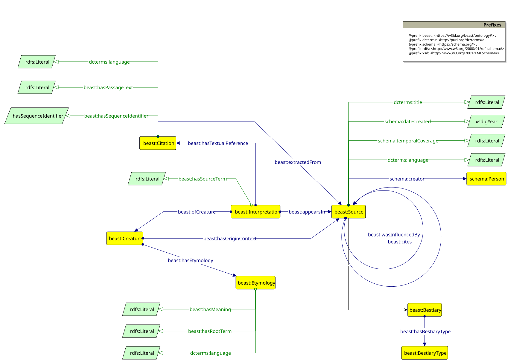
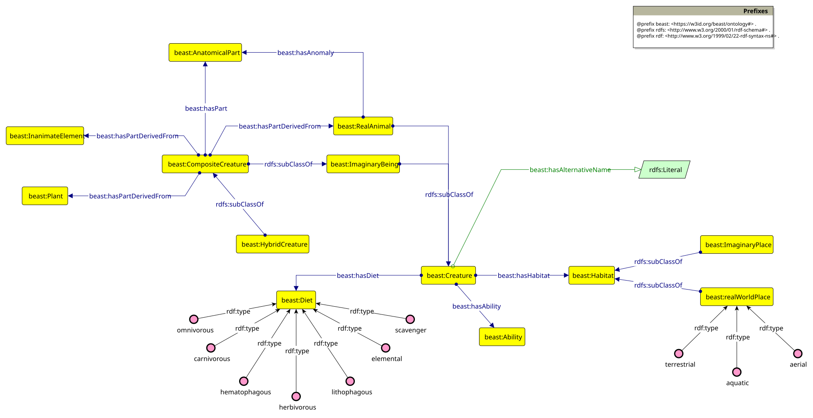
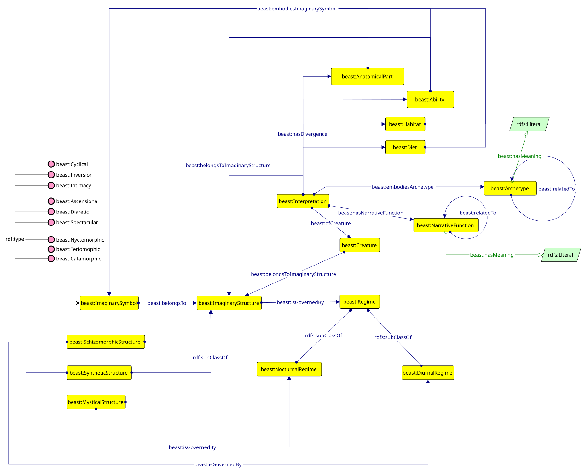
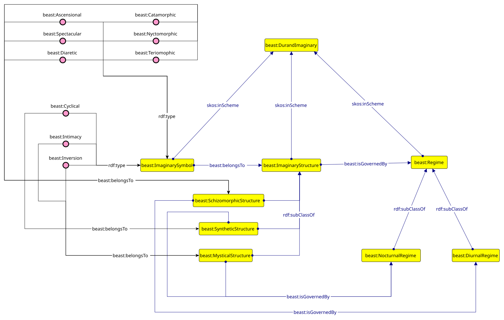

BEAST
Creatures, Sources and Symbols
Mapping the
Imaginary Through Time
The idea behind the project
Rather than fixing each creature as a single, finished image, this project traces how the same being is imagined, reshaped, and reinterpreted across sources, ages, and cultures. A dragon, phoenix, or elf is never a fixed figure: each gains and loses parts, abilities and meanings as it passes from one tradition to another. Such transformations are possible because creatures belong to one of humanity’s oldest imaginative practices: the endless recombination of forms through which cultures have sought to understand themselves and the world around them.
The possibilities of combinatory art are almost infinite - so Borges observed in his Book of Imaginary Beings, and creatures are its perfect demonstration. There is something in the image of a living being that resonates with the human mind, and so, across different ages and latitudes, the same impulse keeps giving rise to invented beings: gods and demons, prodigies and monsters, beasts both real and fantastic. They have always been interwoven with human creativity. Every culture has found itself imagining, decoding, or illustrating them - whether as a product of pure fantasy or as an interpretation of the natural world, a way of making the unknown familiar and drawing it into the realm of culture.
Across history these beings have never remained stable. The Greek téras was a divine sign; the Roman monstrum a warning; medieval bestiaries transformed inherited creatures into moral allegories; later centuries carried them into new geographies and new forms. Each age remade them according to its own imagination.
To organize the symbolic meanings that creatures carry, the project draws on the work of the French anthropologist Gilbert Durand, in particular his book The Anthropological Structures of the Imaginary (1960). Durand showed that beneath the endless variety of myths and works of art lie a small number of recurring structures: reservoirs of images and symbols that continue to shape how we think, live, and dream.
This project is an attempt to read creatures again. Though their forms change across time and cultures, they continue to express recurring human concerns: fear and desire, death, order and chaos. To follow their transformations is therefore also to trace the history of the imagination itself.
The Ontology permanent id documentation
The BEAST Ontology is designed to provide a formal representation of creatures, whether real or imaginary, together with their textual attestations, morphological characteristics, etymological origins, and symbolic meanings. Implemented in OWL, it models entities through a structured set of classes and properties, while a complementary SKOS concept scheme represents Gilbert Durand's structures of the imaginary. The resulting framework integrates formal knowledge representation with a layer dedicated to symbolic and cultural interpretation.
The Ontology is structured into three modules, each representing a distinct layer of knowledge organization. Together, these modules allow the ontology to trace a creature from its historical attestation in a primary text, through its biological description, to its deepest symbolic resonance in the collective imagination.
The Provenance Module documents the historical and textual footprint of every creature in
the ontology. It distinguishes between the universal, abstract concept of a beast
(:Creature) and its source-specific manifestations
(:Interpretation), allowing the ontology to track how a single entity is
described, depicted, or reinterpreted across different authors, periods, and media - from
medieval manuscripts to contemporary movies. It anchors each interpretation to the primary
:Source in which it appears and classifies sources by their genre and
intertextual relationships through :cites and :wasInfluencedBy.

The Biological Module catalogs the physical and behavioural traits of creatures - whether
real or imaginary - as described in Bestiaries and other Sources. It distinguishes
:RealAnimal from :ImaginaryBeing, and further classifies the
latter into :CompositeCreature and :HybridCreature whose anatomy
is derived from two or more real animals. For real animals it documents irregularities
through a structured vocabulary of anatomical anomaly: absence of a part, duplication, and
modification. For imaginary beings it records the
anatomical parts they possess and the real animals, plants, or inanimate elements from which
those parts are derived. Across all creatures the module captures habitats - distinguishing
real geographic environments from mythological or imaginary spaces - diets, and abilities.
This layer serves as the primary morphological record that the Symbolic Module then
interprets as archetypal and cultural meaning.

The Symbolic Module represents the analytical and interpretive layer of the ontology, where
art history, literary theory, and anthropology converge. It provides two
interlocking frameworks for the symbolic analysis of creatures and their source-specific
Interpretations. First, the :DurandImaginary scheme applies Gilbert Durand's
anthropological structures of the imaginary to classify creatures according to the Regime
and structural logic that governs their symbolic imagery. Second, the archetype and
narrative function layer - through
:Archetype, :NarrativeFunction, :embodiesArchetype,
and :hasNarrativeFunction - distinguishes between the universal psychological
pattern a creature instantiates across all its manifestations and the specific contextual
role it performs within a given :Source. The module also captures divergences
at the level of :Interpretation: the properties :additionalPart,
:removedPart, :additionalAbility, and :removedAbility
document how a specific author or tradition departs from the canonical image of a creature,
and what symbolic meaning those departures carry.

The Durand Scheme provides the symbolic and anthropological framework through which
creatures are interpreted within the ontology. Unlike the other modules, which are
implemented primarily through OWL classes and properties, the Durand Scheme is modeled as a
SKOS :ConceptScheme, reflecting its role as a structured vocabulary of symbolic
categories rather than a formal taxonomy of entities. Durand’s theory is grounded in the
idea that symbolic images emerge as cultural responses to the fundamental human experience
of time, mortality, and change. Within this framework, biological traits are not interpreted
merely as physical characteristics but as symbolic expressions.
At the heart of the
scheme are two symbolic regimes. The :DiurnalRegime is
associated with light, height, separation, and opposition, expressing the heroic
confrontation with time and death through images of ascent, purification, and victory. The
:NocturnalRegime, by contrast, is associated with darkness, descent, fusion,
and cyclical renewal; rather than opposing time, it seeks reconciliation with it through
images of enclosure, transformation, regeneration, and return.
In addition, the Durand
Scheme defines three fundamental structures of the imaginary:
:SchizomorphicStructure, :MysticalStructure, and
:SyntheticStructure. These operate as an intermediate layer between biological
traits and cultural meaning. They describe the archetypal logic through which physical and
behavioural characteristics are organized into coherent symbolic systems. Together, these
structures enable the ontology to move from the description of a creature’s morphology to
the interpretation of its symbolic and cultural significance.

The Knowledge Graph permanent id
The knowledge graph aims to gather, integrate and formalize heterogeneous data collected from different sources across various cultures, traditions and historical periods. By leveraging network relations, it connects the three ontological modules, linking each creature's abstract identity to its specific textual interpretations, morphological characteristics and archetypal meanings.
Furthermore, by formalizing Gilbert Durand's structures of the imaginary alongside cross-cultural motifs, the graph enables complex semantic associations such as connecting how an anatomical anomaly correlates with a specific symbolic structure in the anthropologist's interpretation. The knowledge graph fosters the discovery of the symbolic world of creatures, encouraging advanced information retrieval and semantic reasoning through its dedicated SPARQL endpoint.
Querying the dataset it is possible to extract knowledge; the interpretations, divergences, and symbolic mappings gathered here become queryable patterns, letting us move from describing individual creatures to observing tendencies across the whole tradition.
The following research questions are offered as exemplars of this potential. Each is expressed as a SPARQL query against the graph, and each reveals something that remains invisible at the level of a single text. The graph thus becomes not only a repository of creatures but an instrument of discovery, a lens for studying the imaginary itself.